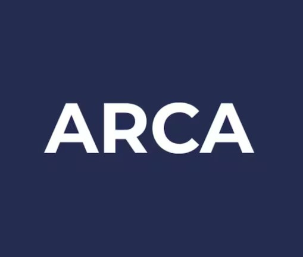

Estafas por Shein y Temu: qué advierte ARCA y cómo evitarlas
Correos falsos que simulan ser de la Aduana buscan pagos y datos de quienes esperan paquetes del exterior. Qué dice ARCA y cómo detectar el phishing.
Los mails falsos de “envíos retenidos en la Aduana” se multiplican entre quienes compran ropa y otros productos en plataformas internacionales. ARCA explicó cómo funcionan, qué buscan y cómo reconocerlos.
Comprar ropa en plataformas internacionales como Shein o Temu cambió la forma de consumir moda, pero también abrió un terreno nuevo para el fraude digital. La Agencia de Recaudación y Control Aduanero (ARCA) emitió alertas en febrero y en mayo de 2026 por correos falsos que simulan ser comunicaciones oficiales de la Aduana. Conocer cómo operan permite evitar pagos y filtraciones de datos.
Por qué crecen las estafas ligadas a Shein y Temu
Según Ámbito, los precios bajos, los envíos rápidos y las promociones constantes hicieron que muchos usuarios se animaran a comprar ropa, tecnología y artículos para el hogar desde el exterior. Canal 26 agregó que muchos compradores recurren a servicios de courier o al sistema puerta a puerta, lo que genera expectativa por la llegada de los paquetes.
Ese contexto es el que aprovechan los ciberdelincuentes. Cuando alguien realmente espera un envío, un mensaje que habla de una retención en la Aduana resulta creíble. Según Noticias NQN, los estafadores aprovechan justamente que muchas personas esperan novedades reales sobre sus compras para hacer más creíble el engaño.
La estafa más común: el falso envío retenido
La maniobra consiste en enviar un mensaje que informa falsamente que un paquete quedó retenido en la Aduana y que hay que pagar algo para liberarlo. En esos correos se mencionan supuestos impuestos, cargos de importación o gastos de almacenamiento, con el objetivo de generar preocupación y urgencia, según informó Noticias NQN.
Según Canal 26, los correos apócrifos suelen indicar que una encomienda está en el Correo Central a la espera del pago de aranceles. Con frecuencia incluyen el logo de ARCA, un número de DNI parcial y un botón para pagar una supuesta tasa pendiente. En varios casos, los enlaces llevan a sitios que imitan la estética oficial.
Qué buscan los delincuentes
La técnica se llama phishing y consiste en robar información personal y financiera a través de mensajes engañosos. A través de enlaces falsos, los delincuentes intentan obtener datos bancarios, números de tarjetas, claves personales, información del DNI, y usuarios y contraseñas. En algunos casos también piden descargar archivos adjuntos o completar formularios fraudulentos.
Qué dice ARCA: lo que el organismo nunca hace
ARCA aclaró que no solicita pagos ni información sensible por correo electrónico y que tampoco envía links para liberar paquetes retenidos. Recordó además que el Domicilio Fiscal Electrónico es el único canal formal de comunicación directa con cada contribuyente. Cualquier mensaje que llegue por otra vía debe considerarse sospechoso.
El organismo también desmintió los rumores sobre supuestas retenciones masivas de compras hechas en Shein y Temu.
Señales de alerta y cómo protegerse
Según Noticias NQN, ARCA advirtió que existen señales frecuentes para identificar este tipo de fraude: errores de redacción o de traducción, direcciones de mail sospechosas, pedidos urgentes de dinero, amenazas de bloqueo del envío, links desconocidos y solicitudes de claves o datos bancarios.
El organismo recomendó no abrir enlaces sospechosos ni descargar archivos adjuntos, verificar siempre el remitente, no compartir información personal, usar contraseñas seguras, revisar con frecuencia los movimientos bancarios e ingresar solo desde canales oficiales. Los intentos de phishing se pueden denunciar a la casilla phishing@arca.gob.ar.
Qué tener en cuenta como consumidor
Más allá de las recomendaciones de ARCA, un consejo práctico es verificar el estado del envío directamente en la plataforma de compra o en el courier antes de pagar cualquier cargo adicional, y consultar a ARCA solo por sus canales oficiales. Ante la duda, no hacer clic en el enlace.